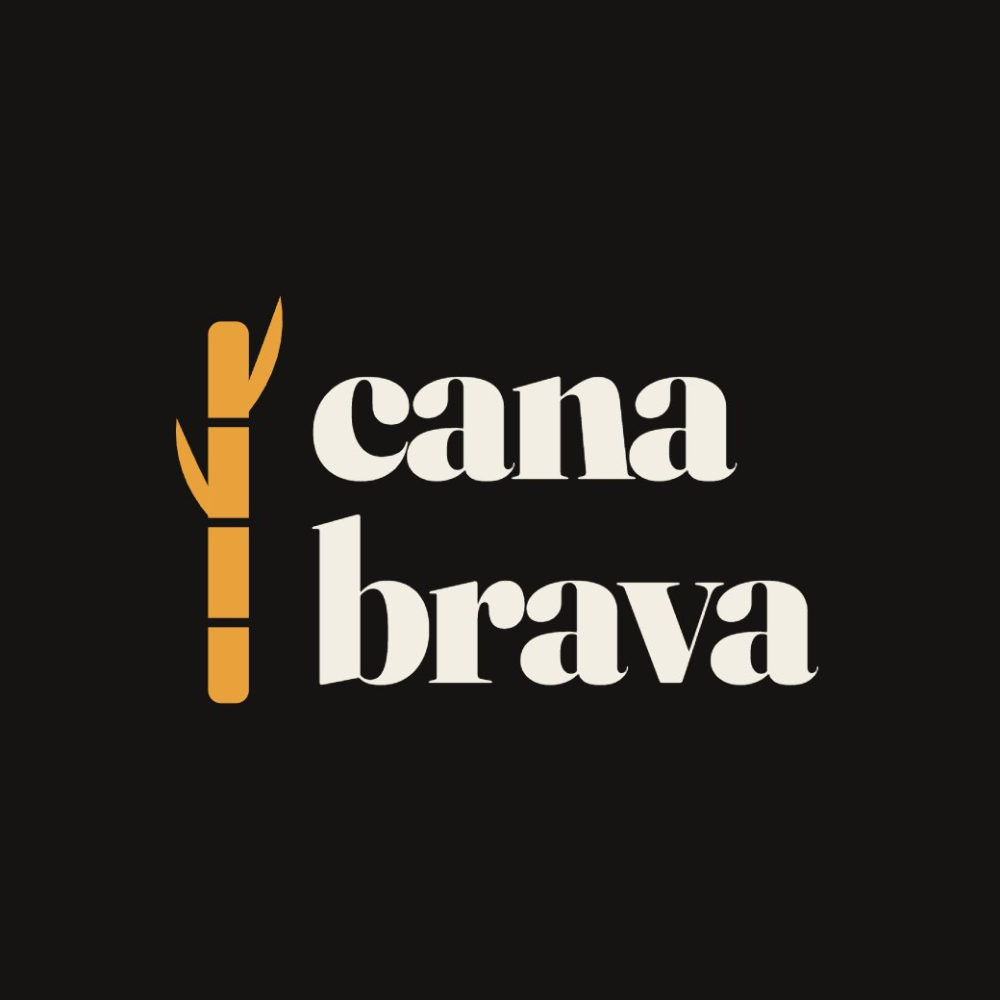

A imprensa que não cede às elites

Campos dos Goytacazes foi feita de cana. Foi ela que ergueu os casarões, encheu os cofres de poucas famílias e definiu quem mandava na cidade e quem trabalhava para que os outros mandassem. As usinas fecharam, mas a lógica continuou: o poder ainda se decide longe de quem vive as suas consequências.
A revista Cana Brava nasce com o objetivo de olhar para esse poder de perto.
Somos uma revista semanal sobre Campos: a política da Câmara e da prefeitura, os acordos que não aparecem nas sessões, o dinheiro público e para onde ele vai, a cidade que fica de fora das fotos oficiais. Fazemos isso com reportagem, análise e colunas assinadas, sem rabo preso com governo, partido ou patrocinador.
Temos lado, e não escondemos: o de quem quer uma cidade mais justa, mais transparente e menos refém dos mesmos sobrenomes. Isso não nos dispensa de apurar, checar e corrigir quando errarmos. Pelo contrário, nos obriga.
Leia, discorde, compartilhe. Uma cidade só muda quando passa a saber de si.